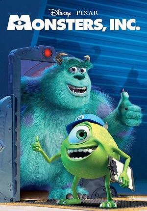
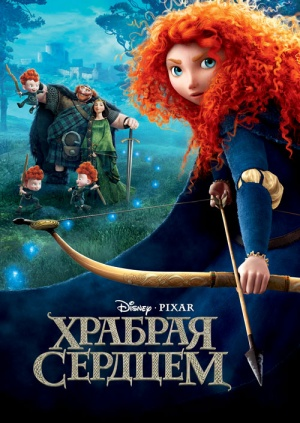
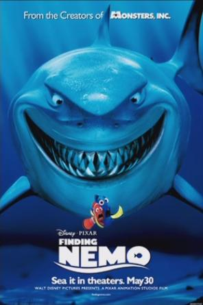
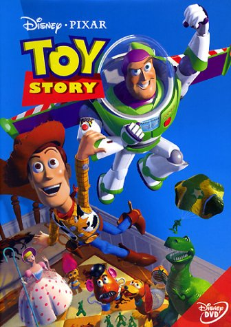

Monstrs, Inc/Корпорация Монстров
Склизкий гад в сливном бачке, мохнатый зверь, похожий на чудовище из «Аленького цветочка», гигантские мокрицы под кроватью — все они существуют на самом деле. Все, что им нужно — пугать детей, потому что из детских криков они получают электричество.
Полнометражный мультфильм рассказывает о кризисах в мире монстров, их жизни. Но однажды вся мирная жизнь монстров оказывается под угрозой: в их мир попадает ребенок. А с детьми столько хлопот, что они могут довести даже монстров.

Brave/Храбрая Сердцем
Искусной лучнице Мериде приходится выбирать свой путь в жизни самостоятельно, и однажды она отказывается следовать древним традициям королевства, бросая вызов могущественным шотландским кланам и их предводителям. Неосторожные поступки Мериды грозят повергнуть королевство в хаос, и тогда она отправляется за советом к эксцентричной отшельнице, которая вместо помощи накладывает на Мериду опасное заклятье. Юной принцессе предстоит полагаться только на собственную храбрость, чтобы преодолеть могущественное волшебство и победить самого страшного зверя из тех, что водятся в горных долинах.

Finding Nemo/В поисках Немо
ДСреди прекрасных тропических морских стихий, в районе Большого барьерного рифа в уединении живет рыба-клоун по имени Марлин. Он растит своего единственного сыночка Немо. Океан и существующие в нем опасности очень страшат Марлина, и он как может ограждает сына от них, но молодой Немо, страдающий излишним любопытством, очень хочет разузнать побольше о таинственном рифе, рядом с которым они живут.

Toy Story/История Игрушек
Каждый ребенок верит, что когда он оставляет свои игрушки одни, они начинают заниматься своими делами. Этот мультипликационный фильм позволяет убедиться им в своей правоте.
Основная идея фильма — каждая игрушка боится надоесть, стать забытой, замененной другой, так как весь смысл их существования — доставлять счастье своим хозяевам.